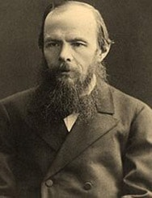
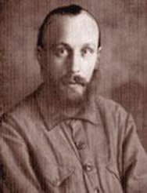
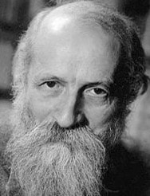
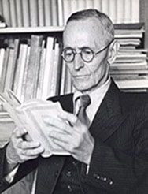
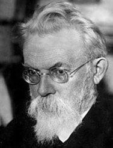
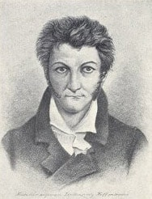
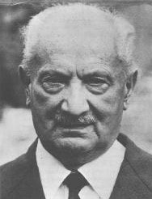
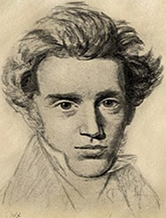
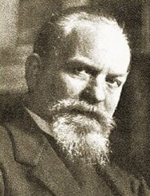

Первый этап. Этос Диалога. Подготовка к диалогической коммуникации. Цель: формирование потребности в изменении качества коммуникации в группе.
Второй этап. Логос Диалога. Настройка диалогической коммуникации – «Грамматика Диалога» и «Правила ведения Диалога». Цели : - развитие речевой и коммуникативной компетенций; - получение первых результатов : оформление речевых поступков.
Третий этап. Пафос Диалога – «неслиянная неразделенность» Контактная фаза Диалога – начало актуального взаимодействия участников. Цель : конструирование Диалога
Четвёртый этап. Завершение коммуникации в группе Фиксирование решений, корректировка действий участниками в зависимости от выбранного Диалог-решения. Цель : - каждый участник/ группа получает свой Диалог-решение; - готовность участников/группы повторить поиск решения актуальных проблем и задач путем диалогического взаимодействия
Техника Диалога помогает измененить Качества Действия человека/группы
Здравствуйте, меня зовут Ольга Смирнова. Я автор проекта 'Техника Диалога в бизнес-коммуникациях'
В создании проекта 'Техника Диалога' меня вдохновляли и поддерживали

Ф.М. Достоевский

М.М. Бахтин

Мартин Бубер

Герман Гессе

В.И. Вернадский

Теодор Гофман

Мартин Хайдеггер

Сёрен Кьеркегор
В.С. Библер

Ф.М. Достоевский
Техника Диалога помогает понять условия, чтобы коммуникация в Диалоге началась
'Техника Диалога' позволяет раскрыть Исключительные Возможности ресурсов человеческого взаимодействия
Техника Диалога помогает понять признаки завершения диалогических коммуникаций
Диалог - это Комплекс Действий при решении
Диалог
Достижение и действие
Межличностное понимание
Личная эффективность
Командное лидерство
Сотворческое влияние
Построение отношений
Командная работа и сотрудничество
Техника Диалога помогает понять на какой этапе происходит диалог
Мы делаем себя и окружающих нас людей неконкурентноспособными
Техника Диалога помогает предсказать результат, когда индивидуальные знания, опыт и навыки сливаются в коллективные действия